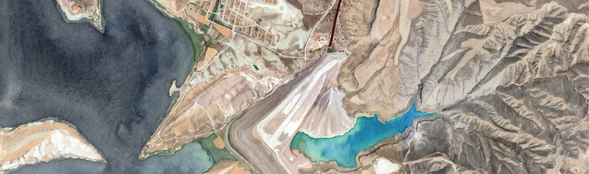

Bilge Nur Ateş, Elif Bilge Küçükkülahlı, İrem Çiçen
Leakage
Çayırhan Ash Lake
Rather than a static scar left on the landscape by industrial production, the Çayırhan Ash Lake operates as a fluid and active toxic assemblage leaking into both the subterranean layers and the sky. This project positions "leakage" not merely as a technical failure, but as a rhizomatic agent that dissolves boundaries, infects water bodies, and alters living ecologies. By spatializing these invisible contamination cycles, the work aims to expose the toxic stratification beneath the industrial landscape and reveal the deviated migration routes above it.
This research employs a multi-dimensional spatial analysis that integrates historical archives, timeline tracing, advanced mapping techniques, and forensic landscape methodologies. By overlaying satellite imagery with chemical and ecological data, the project maps the subterranean toxic layers of the ash lake and tracks the resulting deviations in avian migration routes across the Nallıhan basin. The cross-sections and analytical diagrams serve as critical tools to deconstruct the slow, invisible violence inflicted by industrial infrastructure on the living environment over time.

Leakage
Çayırhan Ash Lake
Rather than a static scar left on the landscape by industrial production, the Çayırhan Ash Lake operates as a fluid and active toxic assemblage leaking into both the subterranean layers and the sky. This project positions "leakage" not merely as a technical failure, but as a rhizomatic agent that dissolves boundaries, infects water bodies, and alters living ecologies. By spatializing these invisible contamination cycles, the work aims to expose the toxic stratification beneath the industrial landscape and reveal the deviated migration routes above it.
Interactive Key MapThe gifs illustrate the rising level of the ash lake through time. It can be observed that the ancient city is encroached upon by the increasing toxic waste.
Reference: (Satellite views are used to create image) Ahmet Soyak Belgehane. (2020, August 1). Juliopolis Antik Kenti batı yakası kaçak kazı kurbanı olmuş (2020) https://youtu.be/YLU86PKOQwY?si=l8jHG5av_7taauz4